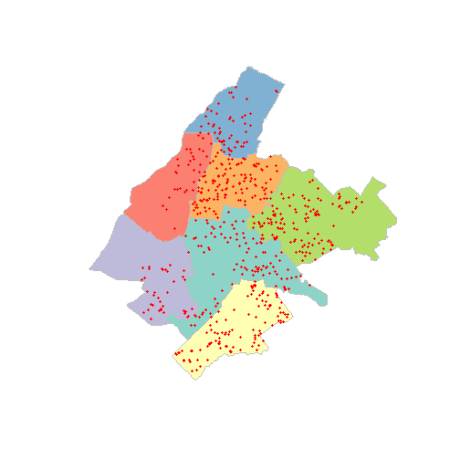
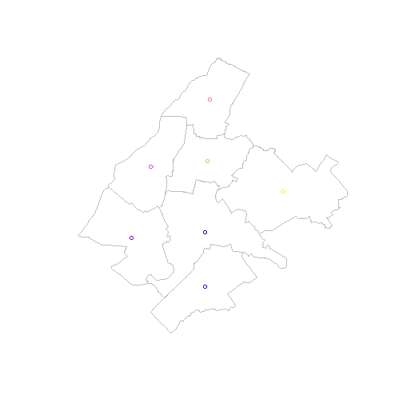

An application of HSAR for asking prices in the municipality of Athens
An application of hsar(), based on rel data, will be
illustrated. The design of the weight matrices needed and the random
effect design matrix will be explained.
Libraries
We start by loading the libraries that will be used.
library(sf)
## Linking to GEOS 3.12.1, GDAL 3.8.4, PROJ 9.3.1; sf_use_s2() is TRUE
library(spdep)
## Loading required package: spData
library(tidyverse)
## ── Attaching core tidyverse packages ─────────────────────────────────────────── tidyverse 2.0.0 ──
## ✔ dplyr 1.1.4 ✔ readr 2.1.5
## ✔ forcats 1.0.0 ✔ stringr 1.5.1
## ✔ ggplot2 3.5.1 ✔ tibble 3.2.1
## ✔ lubridate 1.9.3 ✔ tidyr 1.3.1
## ✔ purrr 1.0.2
## ── Conflicts ───────────────────────────────────────────────────────────── tidyverse_conflicts() ──
## ✖ dplyr::filter() masks stats::filter()
## ✖ dplyr::lag() masks stats::lag()
## ℹ Use the conflicted package (<http://conflicted.r-lib.org/>) to force all conflicts to become errors
library(HSAR)Reading the datasets
At the higher level, we have the seven departments of the municipality of Athens and at the lower level we have the point data of the properties.
data(depmunic)
data(properties)
plot(st_geometry(depmunic),col = sf.colors(12, categorical = TRUE), border = 'grey')
plot(st_geometry(properties),add=TRUE,col="red",pch=16,cex=0.6)
The characteristics that come with the areal data are the id of the department, the number of airbnb properties, the number of museums, the population, the number of citizens with origin a non european union country, the area of the green space (m^2) and the area of the polygon (km^2).
names(depmunic)
## [1] "num_dep" "airbnb" "museums" "population" "pop_rest" "greensp" "area"
## [8] "geometry"
depmunic$pop_rest
## [1] 8202 5009 2735 4167 5099 16531 8017The characteristics of the properties are the size (m^2), the asking price (euros), the price per square meter, the age (years) and the shortest distance to metro/train station (m).
names(properties)
## [1] "id" "size" "price" "prpsqm" "age" "dist_metro" "geometry"
hist(properties$age, xlab = "Age", main="Age of the properties")
Now we are going to create two more variables at the higher, municipality department, level. The first one is the population density per 10k citizens, and the second one is the percentage of non EU citizens.
depmunic$popdens <- depmunic$population/ (10000*depmunic$area)
depmunic$foreigners <- 100 * depmunic$pop_rest/ depmunic$populationThe next step is to create the model data that are going to use in the hsar model. For that, we need for each property (lower data), the data from the relevant department(higher level).
properties_in_dd <- st_join(properties, depmunic, join = st_within)So now, we know each property, in which department resides and the coresponding data for that polygon. We also need that data in sorting order.
model.data <- properties_in_dd[order(properties_in_dd$num_dep),]Create matrices used in the hsar function
In order to run the model we need to create the effect design matrix (Delta), the weight matrix for the high-level - polygon data (M), and the weight matrix for the lower level - point data (W).
In order to define the random effect matrix, we start with estimating the number of properties in each municipality department
properties_count <- count(as_tibble(model.data), num_dep)
MM <- as.data.frame(properties_count)and by geting the total number of municipality departments (7), we define a vector with the number of municipality department that each property belongs
We then define the random effect matrix (Delta) wich has a dimension of 1000x7
n <- nrow(properties)
Delta <- matrix(0,nrow=n,ncol=Utotal)
for(i in 1:Utotal) {
Delta[Uid==i,i] <- 1
}
Delta <- as(Delta,"dgCMatrix")Now we estimate the spatial weight matrix at the higher level which in our case is the municipality departments (polygons). So we start with poly2nb which constructs the neighbours list for polygons and then with nb2mat we generate the weight matrix for the neighbours list previously created. Then we transform the weight matrix in a sparse matrix format.
to have a closer look at M , we can visualize it
plot(st_geometry(depmunic),border = 'grey')
plot(st_centroid(depmunic), add = TRUE)
## Warning: st_centroid assumes attributes are constant over geometries
## Warning in plot.sf(st_centroid(depmunic), add = TRUE): ignoring all but the first attribute
plot(nb.list, st_centroid(depmunic), add = TRUE)
## Warning: st_centroid assumes attributes are constant over geometries
Similarly, we create the spatial weight matrix at the lower level of properties (point data). So we create the neighbour list at a distance of 1300 meters
nb.1300 <- dnearneigh(properties,0,1300)and the weights matrix W as follows
For the W matrix, we can check the neighbours statistics
nb.1300
## Neighbour list object:
## Number of regions: 1000
## Number of nonzero links: 170254
## Percentage nonzero weights: 17.0254
## Average number of links: 170.254Run the models
So, having ready the matrices Delta, M and W, we wun the
hsar() function
res.formula <- prpsqm ~ size + age + greensp + population + museums + airbnb
res <- hsar(res.formula,data=model.data,W=W,M=M,Delta=Delta,
burnin=500, Nsim=1000)
## Warning in spdep::mat2listw(W): style is M (missing); style should be set to a valid value
## Warning in sn2listw(df, style = style, zero.policy = zero.policy, from_mat2listw = TRUE): style is
## M (missing); style should be set to a valid value
## Warning in spdep::mat2listw(W): style is M (missing); style should be set to a valid value
## Warning in sn2listw(df, style = style, zero.policy = zero.policy, from_mat2listw = TRUE): style is
## M (missing); style should be set to a valid value
summary(res)
##
## Call:
## hsar(formula = res.formula, data = model.data, W = W, M = M,
## Delta = Delta, burnin = 500, Nsim = 1000)
## Type: hsar
##
## Coefficients:
## Mean SD
## (Intercept) 1.880275e+03 10.451464146
## size 4.329367e+00 0.513033746
## age -1.999349e+01 1.324229710
## greensp 1.025379e-03 0.001070125
## population -1.020677e-02 0.002522363
## museums -4.452665e+01 10.013196719
## airbnb 5.915438e-01 0.268172791
##
## Spatial Coefficients:
## rho lambda
## [1,] 0.189246 0.095438
##
## Diagnostics
## Deviance information criterion (DIC): 28198.27
## Effective number of parameters (pd): -1.504082
## Log likelihood: -14100.64
## Pseudo R squared: 0.3620759
##
## Impacts:
## direct indirect total
## (Intercept) 1.880841e+03 4.382206e+02 2.319062e+03
## size 4.330671e+00 1.009011e+00 5.339682e+00
## age -1.999951e+01 -4.659722e+00 -2.465924e+01
## greensp 1.025687e-03 2.389767e-04 1.264664e-03
## population -1.020984e-02 -2.378809e-03 -1.258865e-02
## museums -4.454006e+01 -1.037747e+01 -5.491752e+01
## airbnb 5.917219e-01 1.378663e-01 7.295883e-01
##
## Quantiles:
## 5% 25% 50% 75% 95%
## (Intercept) 1.862427e+03 1.873212e+03 1.880350e+03 1.887635e+03 1.896350e+03
## size 3.489378e+00 3.986492e+00 4.321245e+00 4.678758e+00 5.205164e+00
## age -2.229396e+01 -2.091545e+01 -1.998110e+01 -1.907934e+01 -1.799405e+01
## greensp -4.953357e-04 3.921906e-04 9.347588e-04 1.452994e-03 3.367750e-03
## population -1.446168e-02 -1.192027e-02 -1.031386e-02 -8.534997e-03 -5.796541e-03
## museums -6.060125e+01 -5.129784e+01 -4.486833e+01 -3.735308e+01 -2.862404e+01
## airbnb 1.890712e-01 4.267859e-01 5.849742e-01 7.457998e-01 1.096826e+00and the two simpler models defined for rho = 0 and lambda=0. So, firstly, assuming rho = 0 (no interaction effects at the lower level) we get
res_1 <- hsar(res.formula,data=model.data,W=NULL,M=M,Delta=Delta,burnin=500, Nsim=1000)
## Warning in spdep::mat2listw(W): style is M (missing); style should be set to a valid value
## Warning in sn2listw(df, style = style, zero.policy = zero.policy, from_mat2listw = TRUE): style is
## M (missing); style should be set to a valid value
summary(res_1)
##
## Call:
## hsar(formula = res.formula, data = model.data, W = NULL, M = M,
## Delta = Delta, burnin = 500, Nsim = 1000)
## Type: hsar with rho = 0
##
## Coefficients:
## Mean SD
## (Intercept) 1.880563e+03 9.2553985121
## size 4.326023e+00 0.4325595027
## age -1.997018e+01 1.2471979927
## greensp 5.829718e-04 0.0006813374
## population -6.584233e-03 0.0011227284
## museums -4.534275e+01 9.5807150591
## airbnb 6.574944e-01 0.1764067282
##
## Spatial Coefficients:
## lambda
## 0.111888
##
## Diagnostics
## Deviance information criterion (DIC): 28193.07
## Effective number of parameters (pd): -2.092455
## Log likelihood: -14098.63
## Pseudo R squared: 0.3569871
##
## Quantiles:
## 5% 25% 50% 75% 95%
## (Intercept) 1.865244e+03 1.874265e+03 1.881036e+03 1.886741e+03 1.895768e+03
## size 3.641719e+00 4.033250e+00 4.310376e+00 4.628015e+00 5.048434e+00
## age -2.200615e+01 -2.083570e+01 -1.996753e+01 -1.911833e+01 -1.802003e+01
## greensp -6.439277e-04 2.933380e-04 6.549234e-04 1.027634e-03 1.541188e-03
## population -8.302344e-03 -7.287608e-03 -6.676006e-03 -5.995643e-03 -4.711512e-03
## museums -6.123372e+01 -5.128380e+01 -4.534965e+01 -3.955427e+01 -2.992627e+01
## airbnb 3.592684e-01 5.376341e-01 6.620247e-01 7.804008e-01 9.272886e-01and secondly, given lambda = 0 (no interaction at the higher level) we get
res_2 <- hsar(res.formula,data=model.data,W=W,M=NULL,Delta=Delta,burnin=500, Nsim=1000)
## Warning in spdep::mat2listw(W): style is M (missing); style should be set to a valid value
## Warning in sn2listw(df, style = style, zero.policy = zero.policy, from_mat2listw = TRUE): style is
## M (missing); style should be set to a valid value
summary(res_2)
##
## Call:
## hsar(formula = res.formula, data = model.data, W = W, M = NULL,
## Delta = Delta, burnin = 500, Nsim = 1000)
## Type: hsar with lambda = 0
##
## Coefficients:
## Mean SD
## (Intercept) 1.880265e+03 10.543140981
## size 4.308513e+00 0.525275852
## age -1.986549e+01 1.319366170
## greensp 1.371616e-03 0.001140316
## population -9.124421e-03 0.002675214
## museums -4.476371e+01 9.550375854
## airbnb 4.911532e-01 0.225534492
##
## Spatial Coefficients:
## rho
## 0.173638
##
## Diagnostics
## Deviance information criterion (DIC): 28194.37
## Effective number of parameters (pd): -1.627506
## Log likelihood: -14098.81
## Pseudo R squared: 0.3590682
##
## Quantiles:
## 5% 25% 50% 75% 95%
## (Intercept) 1.863706e+03 1.873326e+03 1.879689e+03 1.887368e+03 1.897511e+03
## size 3.490029e+00 3.923317e+00 4.296004e+00 4.663584e+00 5.184349e+00
## age -2.200291e+01 -2.074799e+01 -1.982105e+01 -1.895658e+01 -1.769628e+01
## greensp 1.420867e-05 6.256490e-04 9.982406e-04 1.942325e-03 3.742835e-03
## population -1.315579e-02 -1.102766e-02 -9.232202e-03 -7.360224e-03 -4.491216e-03
## museums -5.960091e+01 -5.079269e+01 -4.475590e+01 -3.875467e+01 -2.831173e+01
## airbnb 6.098123e-02 3.628817e-01 5.108585e-01 6.384128e-01 8.167038e-01